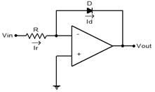

Q.1 The 'slew rate' of an operational amplifier indicates?
A) How fast its output current can change
B) How fast its output impedance can change
C) How fast its output power can change
D) How fast its output voltage can change when a step input signal is given
Ans : D
Q.2 Refer to the above figure, this amplifier is known as?

A) An Inverting amplifier
B) A Non-Inverting amplifier
C) A logarithmic amplifier
D) A common source amplifier
Ans : C
Q.3 A practical op-amp has very _______ input impedance, very ______ output impedance, very ______ open-loop voltage gain, and a ________ bandwidth?
A) High, low, high, wide
B) High, high, low, narrow
C) High, high, high, wide
D) Low, low, low, narrow
Ans : A
Q.4 In an amplifier with negative feedback, the bandwidth is?
A) Increased by a factor of β
B) Decreased by a factor of β
C) Increased by a factor of ( 1 + Aβ )
D) Not affected at all by the feedback
Where A = gain of the basic amplifier and β = feedback factor
Ans : C
Q.5 Negative feedback added to an op-amp __________ the bandwidth and ________ the gain?
A) Increase, Increase
B) Increase, Decrease
C) Decrease, Increase
D) Decrease, Decrease
Ans : B
Sources
[LINKS]